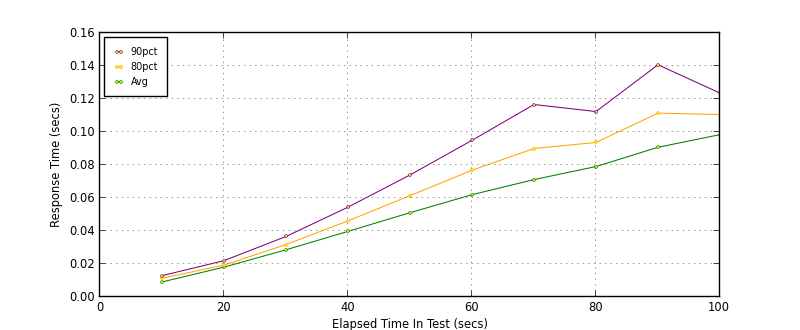
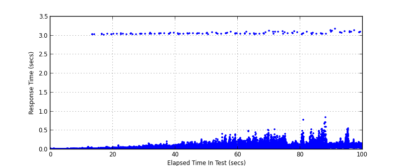
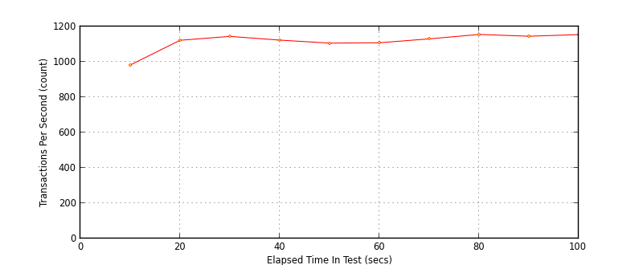
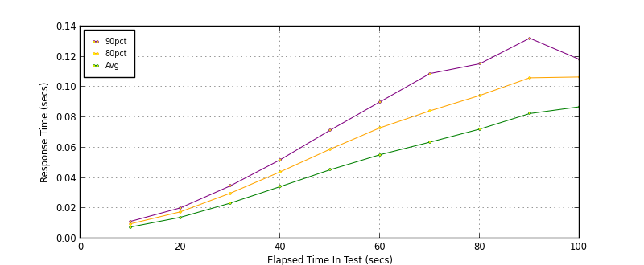
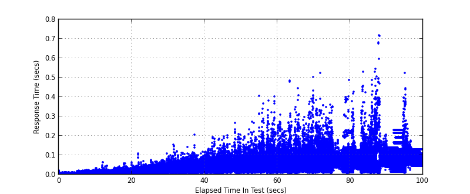

Performance Results Report
Summary
transactions: 111854
errors: 118
run time: 100 secs
rampup: 100 secs
test start: 2016-12-07 16:38:10
test finish: 2016-12-07 16:39:50
time-series interval: 10 secs
workload configuration:
| group name | threads | script name |
|---|
| user_group-1 | 20 | v_get.py |
| user_group-2 | 20 | v_get.py |
| user_group-3 | 20 | v_get.py |
| user_group-4 | 20 | v_get.py |
| user_group-5 | 20 | v_get.py |
| user_group-6 | 20 | v_get.py |
All Transactions
Transaction Response Summary (secs)
| count | min | avg | 80pct | 90pct | 95pct | max | stdev |
|---|
| 111854 | 0.005 | 0.056 | 0.082 | 0.102 | 0.123 | 3.183 | 0.105 |
Interval Details (secs)
| interval | count | rate | min | avg | 80pct | 90pct | 95pct | max | stdev |
|---|
| 1 | 9827 | 982.70 | 0.005 | 0.009 | 0.011 | 0.013 | 0.015 | 0.030 | 0.003 |
| 2 | 11229 | 1122.90 | 0.005 | 0.018 | 0.019 | 0.022 | 0.024 | 3.048 | 0.086 |
| 3 | 11447 | 1144.70 | 0.007 | 0.029 | 0.032 | 0.037 | 0.041 | 3.061 | 0.102 |
| 4 | 11236 | 1123.60 | 0.008 | 0.040 | 0.046 | 0.054 | 0.063 | 3.081 | 0.104 |
| 5 | 11066 | 1106.60 | 0.007 | 0.051 | 0.061 | 0.074 | 0.089 | 3.069 | 0.106 |
| 6 | 11082 | 1108.20 | 0.007 | 0.062 | 0.077 | 0.095 | 0.120 | 3.103 | 0.112 |
| 7 | 11301 | 1130.10 | 0.008 | 0.071 | 0.090 | 0.117 | 0.151 | 3.134 | 0.111 |
| 8 | 11551 | 1155.10 | 0.009 | 0.079 | 0.094 | 0.112 | 0.148 | 3.112 | 0.104 |
| 9 | 11450 | 1145.00 | 0.008 | 0.091 | 0.111 | 0.141 | 0.198 | 3.136 | 0.120 |
| 10 | 11545 | 1154.50 | 0.010 | 0.098 | 0.111 | 0.124 | 0.140 | 3.183 | 0.107 |
Graphs
Response Time: 10 sec time-series

Response Time: raw data (all points)

Throughput: 5 sec time-series

Custom Timer: GET
Timer Summary (secs)
| count | min | avg | 80pct | 90pct | 95pct | max | stdev |
|---|
| 111734 | 0.004 | 0.049 | 0.078 | 0.098 | 0.118 | 0.717 | 0.041 |
Interval Details (secs)
| interval | count | rate | min | avg | 80pct | 90pct | 95pct | max | stdev |
|---|
| 1 | 9827 | 982.70 | 0.004 | 0.008 | 0.010 | 0.011 | 0.013 | 0.023 | 0.003 |
| 2 | 11229 | 1122.90 | 0.004 | 0.014 | 0.018 | 0.020 | 0.023 | 0.065 | 0.005 |
| 3 | 11447 | 1144.70 | 0.006 | 0.023 | 0.030 | 0.035 | 0.039 | 0.110 | 0.009 |
| 4 | 11236 | 1123.60 | 0.006 | 0.034 | 0.044 | 0.052 | 0.061 | 0.207 | 0.015 |
| 5 | 11066 | 1106.60 | 0.006 | 0.045 | 0.059 | 0.072 | 0.085 | 0.267 | 0.023 |
| 6 | 11082 | 1108.20 | 0.005 | 0.055 | 0.073 | 0.090 | 0.115 | 0.406 | 0.034 |
| 7 | 11301 | 1130.10 | 0.006 | 0.064 | 0.084 | 0.109 | 0.142 | 0.502 | 0.043 |
| 8 | 11551 | 1155.10 | 0.008 | 0.072 | 0.094 | 0.115 | 0.144 | 0.524 | 0.043 |
| 9 | 11450 | 1145.00 | 0.007 | 0.083 | 0.106 | 0.132 | 0.170 | 0.717 | 0.055 |
| 10 | 11545 | 1154.50 | 0.009 | 0.087 | 0.107 | 0.118 | 0.128 | 0.525 | 0.034 |
Graphs
Response Time: 10 sec time-series

Response Time: raw data (all points)

Throughput: 10 sec time-series